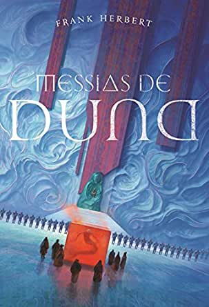

Publicado em 1895, A Máquina do Tempo é considerado um dos primeiros romances a tratar do conceito de viagem no tempo.
As Crônicas de Nárnia
oferece aos leitores viagens ao fim do mundo,
criaturas fantásticas e batalhas épicas entre o bem e o mal em seis livros
que, juntos, ficaram conhecidos como ”As crônicas de Nárnia”.
A bússola de ouro (Fronteiras do Universo v.1)
O primeiro livro da ordem dos livros de Fronteiras do Universo é A bússola de ouro,
no qual Lyra Belacqua e seu daemon, Pantalaimon, vivem felizes e soltos entre os
catedráticos da Faculdade Jordan, em Oxford.
A faca sutil (Fronteiras do Universo v.2)
O segundo livro da ordem dos livros de Fronteiras do Universo
é A faca sutil, no qual Lyra Belacqua encontra Will Parry ? um fugitivo que
logo se torna um aliado mais que necessário.
A luneta âmbar (Fronteiras do Universo v.3)
O terceiro livro da ordem dos livros de Fronteiras do Universo é A luneta âmbar.
Em todos os universos, forças se reúnem para tomar um lado na audaciosa rebelião de lorde Asriel
contra a Autoridade.

Messias de Duna
Messias de Duna é o segundo volume da série criada por frank herbert.
Ele revela um lado mais humano de seus personagens, além de aprofundar e estender o
universo de Duna, aliando discussões políticas, filosóficas e religiosas à épica história
de poder, vingança e redenção.